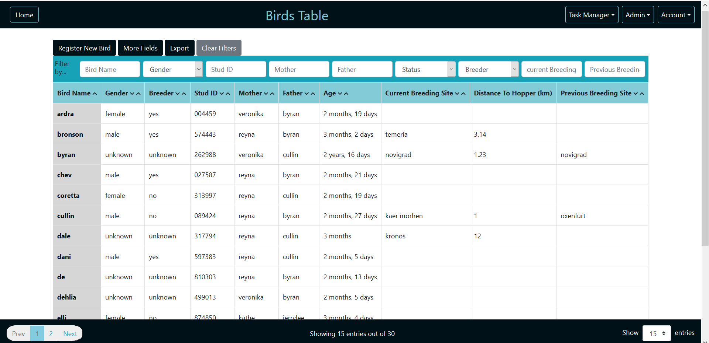
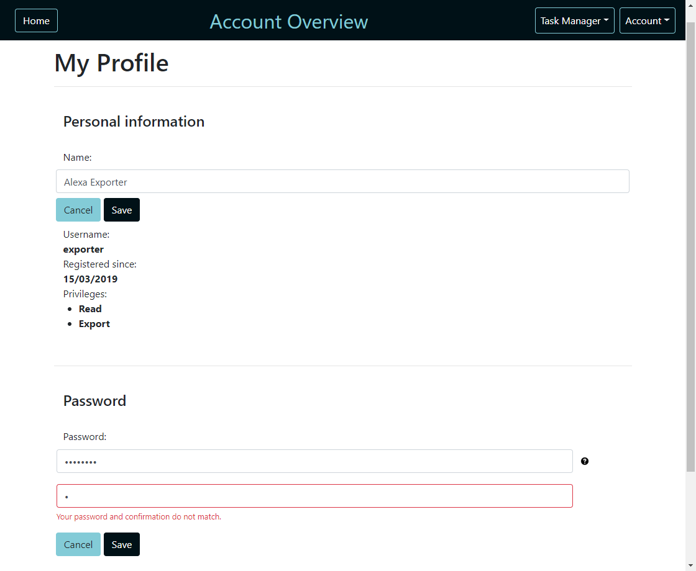

This version of UI design was created once we decided that for system development, we will be using sails.js web application framework which supports large number of user-friendly UI features. The initial web app layout gave us an idea for new system's layout which enabled us to created new version of UI prototype. The priority was to concentrate on displaying data in Live View, in Single Bird View and Bird Table view. Based on this, other parts of the system can be constructed in the same way to create consistent UI throughout the whole system.
In order to display as much information as possible we decided to locate drop-down menu at the top of the
page in the left corner which freed up the space to display more information on the screen. More
sophisticated time filters were added in
order to find specific bird visit times. Users can search for birds by typing bird's name in the search box.
Pagination bar has been kept and is located in the footer to enable users to navigate through large amount of data more easily. If users
wanted to view full information
about bird that showed up on the live view they can press 'View' button at the end of the row and it would
open new view with bird information.
This version of 'Live View' has been modified number of times. Table has been moved to centre. First column
has been removed to avoid unnecessary information on the screen as it does not serve any purpose for
researchers. Menu has been moved to
the top right corner and 'Live View' button has been added so that users can always return to live screen
from any view. 'View' button at the end of each row has been also removed as we decided that this option can
be replaced with different
functionality such as pressing on the table entry. This made Live View less cluttered from unnecessary
buttons.
We also had to decide on the ways of showing users when visits have been registered in the system. If new
visits were added automatically, it would distract users from viewing Live View, therefore system was
developed in the way that it would
inform users when new visits were registered and advice users to refresh the page.
One of the ways to open single bird view is by clicking on 'View' button from Live View screen. All
data is aligned to centre and buttons are added to expand more information about birds such as: Parent
information, More information and
table with past visits. 'Edit' button in the footer allows to edit information in this view.
Based on client requirement Single Bird view has been modified. Instead of arranging all data in one column, decision has been made
to display information in two columns. This enables users to see more data on the screen. 'Export' button
has been added in the footer
to export information about one bird as requested by the client, however this function has been removed at
the later stage after user testing as client advised that this function will not be used and there is no need to export information about sigle bird.
In order to create this view, we had to understand what is the most important information that needs to be accessed immediately. The first email interaction with the client included information about what fields are the most important to researchers that need to be accessed when viewing information about birds.
Based on this reply we have created Birds table. The design is consistent with Live View and displays the most relevant information requested by the client. At the top of the page there are number of filters that allows users to narrow down the search. 'Export' button located in the footer allows users to export the view that is currently displayed and 'Show Full View' button enables users to access all information about each bird. When users hover over one of the bird's entries it gets highlighted and users can open this particular bird's view showed above.
Manage Rings View
Once main screens that display the most important information about birds have been designed, new requirements arose such as keeping track of bird rings in the system.
New view has been designed in order to overview new RFID enabled rings. This view was designed in the same way as other views keeping all common features in the same place to keep design consistent.
Table included all important information about rings such as: Printed ring ID, Ring colour, System ID, if ring is assigned to bird or not, which bird ring is assigned to and assignment date. It was requested by client to have this information displayed in this (Meeting Minutes - 1st February). This view included section at the top to import new rings from CSV file.
User Management (Admin section)
As per client's requirements user management was only done by system admins. Users whose privileges included admin rights had access to view all users of the system, register new users and view user activity monitor.
Admin option on the menu bar is only visible to those users who have admin rights.
Information about all users is displayed in the table similarly like other information stored about birds. In order to view particular entry admin has to click on one of the entries in the table and new window will open with option to delete or edit another user.
| View Users |
View Single User |
|
|
| Register New User |
Delete User |
|
|
Contrast checker
Following first UI prototype test, client agreed to chosen colour scheme for the system. However, chosen
colours failed contrast checker criteria.
To meet usability standard, colours had to be modified. As client already agreed to chosen colours scheme, we
decided to use same colours, but modify shades and brightness. Pictures below show that new colours have
passed the contrast checker criteria. Colours in the system have been adjusted to match with these colours.
5.1 Coordinator ServiceBack to Top
5.1.1 High Level Activity Diagram
5.1.2 Config
Configuration parameters are defined in config.py (follow link to see an example with comments). Parameters are
validated in two steps - static (explicit) and dynamic (implicit).
In the static step, the following conditions must be met:
-
config.py exists
-
Required parameters defined (
db_host, db_user, db_password,
db_port, db_name)
Parameters related to the database are the only required values as the service can't make reasonable default
guesses. The static step also internally sets the default values where applicable. If one of the conditions
above is not satisfied, the service
exits with a descriptive error message (eg.
"Missing required config param db_name"). If a
default value is used, the service outputs a log informing the user (eg.
"Missing optional config param log_level, using default = 'WARNING'",
or
"Unknown log_level value TRACE in config, must be one of 'DEBUG' | 'INFO' | 'WARNING' | 'ERROR' | 'CRITICAL'. Using default = 'WARNING'").
The dynamic step occurs when the service attempts to use the provided parameters
to connect to the database and serial port. If either of the connections fail, the service exits with an
error message informing the user what went wrong (eg.
"Couldn't connect to database, make sure it's running and the correct connection params are set in config.py").
5.1.3 Reading RFID packets
The RFID packets are 13 bytes long and have the following structure:
| Start byte (static - 1 byte) |
Unused (static - 3 bytes) |
Tag Data (varies - 7 bytes) |
XOR checksum (varies - 1 byte) |
End Byte (static - 1 byte) |
0xAA
|
0x0F 0x08 0x00
|
0x03 0x84 0x12 0xDB 0xFA 0xE7 0xD5
|
0xB1
|
0xBB
|
Testing showed that packets are not separated from one another in the incoming serial data stream.
Therefore, a mechanism was required to deal with the possibility that a network error causes us to receive a
packet with missing, or extra, bytes. Simply
relying on start and end bytes would not be sufficient, as the tag data can also contain
0xAA
and
0xBB. Therefore, the code builds up a buffer that always starts with
0xAA, is
at least 13
bytes long, and always ends with
0xBB. This increases the chance that the buffer will contain a
valid packet and minimizes data loss by allowing for some network noise before or after the packet. This is
achieved with the following
code:
buffer = bytearray()
while True:
read = self.ser.read(1)[0] # read one byte at a time
if read == 0xBB and len(buffer) >= 12:
# we've read the end byte and the buffer is at least as big as the expected packet size,
# so parse what we have (async)
buffer.append(read)
threading.Thread(target=self.__handle_read, args=(buffer,datetime.datetime.now())).start()
buffer = bytearray()
elif len(buffer) == 0 and read != 0xAA:
# the buffer is empty but we've read something other than the start byte, so let's discard this
logging.debug("Read byte %X but expecting start byte 0xAA, discarding this read", read)
else:
buffer.append(read)
The buffer is then handled asynchronously (described in section 5.1.4) to prevent blocking
new incoming data.
5.1.4 Buffer handling
The raw buffer is handled by a function that attempts to extract a 13-byte packet that starts with the start
byte and ends with the end byte, as well as passes XOR checksum validation. If no valid packet is found, the
buffer is discarded. This is achieved
with the following code:
# tries to extract a single packet from the raw data we received
# the raw data should have at most one packet of length 13, starting with 0xAA and ending with 0xBB
# if no valid packet found in the data, return None
def __try_extract_and_validate_packet(self, incoming_bytes):
if len(incoming_bytes) < 13:
return None # this shouldn't ever happen
else:
logging.debug("Received a data buffer with 13 or more bytes, attempting to extract packet")
start_index = 0
end_index = 12
while end_index < len(incoming_bytes):
start_byte = incoming_bytes[start_index]
end_byte = incoming_bytes[end_index]
if start_byte == 0xAA and end_byte == 0xBB:
supposed_packet = incoming_bytes[start_index:end_index+1]
logging.debug("Extracted something that looks like a packet: %s, validating...",
supposed_packet.hex())
if(self.__validate_packet(supposed_packet)):
logging.debug("Validation succeeded, we've found a packet in our data")
return supposed_packet
else:
logging.debug("Validation failed, continuing search for packet")
start_index += 1
end_index += 1
# if we've reached this point, we either didn't manage to extract a packet,
# or it failed validation, so keep searching
return None
# if we've reached this point, our loop failed to extract a valid packet,
# so signal to the caller that we've failed by returning None
If a valid packet is found, it (along the date and time the buffer was received) is then
passed to the database service, described in section 5.1.5.
5.1.5 Packet Handling
The service retrieves the relevant RFID record from the database according to the payload of the packet (if
no RFID records are found, the packet is discarded). It then checks whether there have been any visits
recorded from this RFID record within the
period defined by same_visit_frequency_minutes setting in the config file. If there are, the packet is
discarded. If not, a new record is written in the visit table in the database, containing the date/time the
buffer was received, the RFID
record ID and the bird record ID (if present). The visit table is read directly by the main application to
detect and show new visits. If at any point the connection to the database is dropped, the service attempts
to reconnect up to five
times before giving up and exiting with an error message.
5.1.6 Future Improvements
-
Automatic serial port scanning.
Currently, the person launching the service
must specify the serial port name in the configuration file. Although the service is intended to be
used only by technical users, this
can still present a challenge if the user is unfamiliar with the operating system or serial
communication in general.
This wasn't included due to extensive testing required to ensure that
the automatic scanning is reliable and
does not introduce more problems that it solves.
-
Abstraction of the database layer.
Currently, raw SQL queries are used by the
service to interact with the database. This presents possible maintenance difficulties in the future
as small errors can lead to catastrophic
consequences, and code readability is compromised. Object-relational mapping (ORM), similar to the
one used for the main system, could be used instead.
This wasn't included due to an aim to keep
the service lean and reduce level
of bloat. However, the right ORM implemented correctly could offset these negatives with the
positives it brings.
-
Support of API mode.
Currently, the service can only read data received in XBee
AT mode (AT and API modes compared in section 1.1.1). API mode support could be added as it allows for
greater extensibility and more
features, such as identifying when a network device has gone offline.
This wasn't included due
to the increased complexity of API mode and the system requirements lacking features that could make
use of API mode.
5.2.1 Creation
in the early stages of development we used Sails' built-in datastore called: sails-disk. This
let us manually create entries that only existed during that run of the program. This was fine for when we
were creating simple pages
such as the login page but in the larger tests and for actual production we needed a proper database, so
around the time that live view was starting to be developed the MySQL database was created. With use of v1
of the database diagram, scripts
were made to create corresponding tables. The full script can be viewed in echoDBSetup.sql (Click to open document)
These tables were then used to generate the Models in our Source Code, located in api/models,
using the Node Plugin sails-inverse-model (click to go to plugin's npm page).
These models have a set of built-in methods that allow us to interact with the database.
If these
models are modified Sails can uses them to create new tables by running the system using
sails lift --drop to drop the old tables and create new ones. So after the first versions of
models were generated we could just update the models instead of updating the original scripts and
rerunning. Although we could have used this method of creating the model first and letting Sails create the
tables to make the original version We selected to use the script method as it was easier to verify that the
diagram was actually workable and to check if Sails handled the data types we wanted as expected.
5.2.2 Test Data
Now that the database was in place we created a set of insert statements to generate dummy data based on
input from the user on the data they currently use and based on what we knew we would need to test any edge
cases, such as a bird visiting when it hasn't been registered. These statements had to be updated whenever
the database was changed and if new cases were found that could test limits of the system. The full script
can be viewed in AiOData.sql (Click to open document).
5.3 CSS Styling & Matching UI Design Back to Top
5.3.1 Initial Styling - Priyesh Patel
Sails.js provides an overall page layout in which common elements can be put and the body of the page can be
injected when ran, originally the common elements included both the header and footer bars but for our
system we altered the footer on most pages so I removed this and switched it to be injected with the body.
For the actual styling Sails has Bootstrap 4 preinstalled (a vast library of front-end elements) so we used
this as a base and modified what we needed, for a proof of concept I stylized the live view page using some
quick inline CSS, this was then taken over by Afzaal who extracted CSS to their own files and tweaked, added
to and applied them globally.
5.3.2 Full System Styling - Afzaal Ahmad Razeem
A lot of effort has been put to make the overall website interactive and easy to navigate. We have tried to make it consistent and easy to use web interface.
5.3.2.1 Contrast and colour
We chose the colours very carefully including the theme colours, buttons, text. The chosen colours were agreed with the client and we made sure
that they meet usability standards. The colours are kept consistent throughout the website.
5.3.2.2 Buttons
Many different types of buttons are used(these are shown in the image above). All the buttons are kept consistent throughout the webiste and followed the
UI prototype.
5.3.2.3 Modals
On different pages, modals have been used instead of new pages. That way we have less pages for the whole website which also makes it easier for users to
navigate through the website. For example, viewing bird, editing bird and registering bird are using modals and can be accessed from birds page.
5.3.2.4 tables
Tables have been used throughout the website. We have used the same colours, styles, font sizes for all the tables to make is consistent. For example, the first
column and first row of every table has a different colour which was kept consistent throughout the website.
5.3.3 UI Design Compliance & Client Requested Changes - All
throughout the styling process we used the latest UI Design as our reference, and for pages that weren't
fully defined we used some common sense and made sure the overall style matched the rest of the defined
pages. There are some discrepancies between UI Design and the end product due to some input we gathered from
the client during live demonstration meetings (see screenshot below), such as the buttons for adding new
records being moved above tables instead of below and some name changes.

5.4.1 Logging in
Login is a simple screen that shows two input fields for username and password, and a "Remember me" checkbox for extending the lifetime of the user's session if ticked. User can login using their unique username and password. When "Sign in" button is clicked,
data is sent to the back-end login.js which attempts to look up the user record in the database with the specified username. Then, if the username exists, it uses
bcrypt to compare the hashed password from the database with the provided password. If that matches then user is logged in and redirected to the home page.
if however, username does not exist in the database or provided email and password combination does not match any user in the database,
it displays a message saying that username and/or password is incorrect.
5.4.2 Logging out
When user clicks on Log out button, data is sent to logout.js. This action deletes the req.session.userId key from the session of the requesting user agent.
After logging out from a web browser, the user is redirected to the login page.
5.6.1 Viewing All Birds

The Birds are displayed in a simple paginated HTML table, following the design of similar pages. The Birds data for the current page is pulled from the back-end (get-bird.js)
and the table is populated using a v-for loop. When the page is loaded, instead of displaying all the information about the birds it only displays the important and frequently accessed
information which was discussed and agreed with the client.
Filtering is available on the fields using a contains-match except for "Gender", "Status" and "Breeder" which are made a drop down options for user to choose from instead of typing.
Filtering is done in the backend and the list of matching Birds is updated as soon as the user types or edits anything in any of the filter fields. All filters can be cleared by clicking "Clear Filters" button.
5.6.2 More Fields
The user is able to view more data about the birds by adding extra columns to the Birds Table. By clicking "More Fields" button, the user is presented with a
modal of all the columns which can be selected to be added to the table. Fields are added to the table in order to how they are shown in the modal. User can select all the fields by
clicking on "Select All", instead of selecting each field manually. Once the fields are added to the table, filters are also added for the selected fields.
5.6.3 Viewing Single Bird
Each row from the Birds table can be clicked to get further details of the specific bird. Details are displayed in a modal using v-for loop.
Details of the bird are divided into 4 main sections including the past visit history of the bird which is displayed in an other paginated table(image below).
Condition History is also added in the single view which displays the most currently added condition of the bird. Condition History can be expanded further to see the past conditions of the bird.
All birds can be edited from single bird view by clicking the edit button. The modal can be closed by either clicking close button or simply clicking outside the modal.
5.6.4 Edit Bird
Bird data can be edited by pressing the 'Edit' button in Single Bird view. This makes all the fields
in Single view editable.
The following live validation is
performed on the form to ensure data integrity:
-
Bird name must be present and unique
-
NFC Ring ID, if present, must be a registered ring that's not assigned to another bird
-
Where Hatched, Where Laid, Where Released, Where Fledged, New Breeding Site, if present, must be valid Nest Site records
If an invalid value is detected, the field is highlighted in red and the user isn't allowed to submit the form
until they enter valid values:
When the user clicks 'Save', if all values are valid, the new data is sent to the back-end
(
edit-bird.js), where the appropriate record is updated and saved in the database.
5.6.5 Register Bird
The 'Register Bird' modal can be accessed by pressing the 'Register New Bird' button in the full bird view
(described in section 5.6.1). It looks and functions largely the same way as the 'Edit Bird' screen (described in section
5.6.4). When the user clicks 'Save', if all values are valid, the new data is sent to the back-end
(create-bird.js), where the appropriate record is created and saved in the database.
5.6.6 Future Improvements
-
Improve back-end efficiency.
Currently, the get-bird.js controller is very inefficient
in the way that it retrieves and processes bird records. This causes degraded performance when viewing or filtering birds.
This is because the object-relational mapping (ORM) system used in the backend (Waterline)
doesn't support complex filtering, such as nested fields or joined tables. This means that filtering and pagination must be done at the
controller level which is much slower than doing it on the database level. Possible solutions include using a native SQL query or using a different
ORM.
This wasn't done as it would have taken significant development / testing time to implement either of the two approaches outlined above. Nevertheless,
this is one of the priorities when considering future development, as the performance is likely to worsen when more bird records are added.
-
Split up the modal views.
Currently, the single view, edit and create modals are very large with a lot of information being
displayed at once. They could be made smaller by, for example, hiding some less-used fields by default.
Although the hiding approach was used in the earlier stages of development, the design prototype preferred by the user didn't include the option to hide any fields. Nevertheless, this could
still be worked in while taking care not to limit functionality or efficiency of common tasks.
- Allow user to view nestsite / RFID details by clicking on the relevant field.
The RFID / nest site
names
in the 'NFC Ring ID', 'Where Hatched', 'Where Released', 'Where Fledged', 'Where Laid', 'Current Breeding Site' column could be clickable and bring up details of the relevant record.
This
functionality wasn't added due to an oversight,
as such functionality already exists in similar pages, such as Live View.
-
Link parent details to existing birds.
Currently, the bird parentage details are a simple text field that makes no attempt
to link to existing birds in the system. Although the user should be able to log parent names even if they're not registered in the system,
it would be useful to match parent details to registered birds, if there are any.
This wasn't done as it would require a change in our data model and, as the user hadn't indicated that they want this field to link
to existing birds, this change wasn't prioritized. Nevertheless, if implemented correctly, it could provide valuable information to the user, without
introducing any negatives.
(this is a rather long file so it is not possible to show screenshots of all the relevant parts,
click here to open the controller in a new window and to be able to see the parts discussed. It should not be required, however, as I'll try my best to detail the basics here.)
5.7.1 Exporting - Why & What we used
To support the legacy systems of the client we needed a way for the data on screen in the Bird View to be exported to an excel spreadsheet, originally this was planned to be done client side (i.e. in-browser) however we discovered a bug in the npm module we wanted to use (Sheet.js (click to go to npm page)) and Sails.Js. The conversion from a back-end node module to a front-end one requires the use of Sails' built-in browserify.js however this was not compatible (there is a strange bug where the conversion code generated and to reference the package it uses "JS" + "zip" but it only works when it is "JSzip").
Because of this we decided to move the generation to the server side, since the file generated shouldn't be computationally expensive it was agreed that it wouldn't be an issue. During the research before making this change we found a module node-excel-export (click to go to npm page) that was had documentation written specifically for Sails and had all the main features we needed, so we switched to using that to save some development time.
5.7.2 How it works
All the logic for the export is located in a single controller (export-data-bird-simple.js) and is accessed by the Bird View when export is pressed the exportToExcel function in get-bird-page.js is called (shown below) which checks which fields are currently being displayed and then use HTML GET to send them over to the export controller.

The export controller will then use this list of parameters to build a Specification array (see below for small snippet) which is used by node-excel-export to define the columns that will be in the report, it handles the name, style and size of each column and the key (seen as specification.KEYNAME in the image) is used to map on to the data from the database queries. A specification entry is required for each field and as such this is a rather long list of if statements checking each parameter from the get-bird controller and creating a matching specification.
In order to get the data that the specification will map onto there are five different queries being used (lines 78 to line 155 in controller) and that's because this controller is essentially combining information from multiple pages (ring, nest, bird). In retrospect some of these could have been combined into joins however the complexity of refactoring outweighed the available time and had no visible benefit to the end user so it wasn't deemed a priority. This data then had to be processed row by row to create bird entries with keys matching that of the specification (see snippet below).
After this, node-excel-export had all it needed to create the spreadsheet and use Sails' built-in document downloading features to send to the user for download.
5.7.4 The End Report
from this report the user can use excel's built in filtering features to filter the data as they would have done in their old system (see below, on the top is the legacy sheet, on the bottom is our generated one. (downloadable here for clearer view))
5.7.5 Future Improvements
-
Factor in active filters on the export data
Currently Only the column selection is taken into account for selecting the data to create the report from however we have a filter bar that allows data to be filtered on screen so it would be a nice idea to see those active filters translate over on to the report (i.e. if the user is searching for birds with name containing "br" and then presses export, the report could only contain these birds). This can of course be done through excel anyway but requires an extra few clicks. It was not implemented due to 1) the time constraint (export was started very late in development); 2) the complexity of handling just the fields resulted in around 30 conditionals so adding in filter checks would have doubled the number of checks at the least; and 3) The most important reason we didn't add this was because the client said it wasn't a must have feature when we asked them after on of the live demonstrations (see below for interaction). So if there was time it would be a nice to have thing.
-
Enable Filtering by default in spreadsheet
This is just a small ease of life feature we would have liked to have but ultimately doesn't affect the features available to the end user. As it stands to turn on filtering in the excel report the user has to click Sort & Filter and then Filter, after this filters are ready to use. What we wanted was for these filters to be active by default so as soon as the report is open filtering options are already there to use however, the module we used for the export doesn't have a feature to do this and we only thought of this after everything had been written and the cost of rewriting and retesting with a different module didn't match up with the benefit of saving at most 2 clicks.
5.8.1 Manage Rings Screen

5.8.2 Importing Rings
Rings are uploaded to the system in bulk, by the user submitting a CSV file (click link for example of valid CSV). When the user uploads a CSV file, it
is validated client-side using the
following criteria, all of which must pass:
-
It is comma-separated column-wise
-
It is newline-separated row-wise
-
It has exactly three columns
-
The first row consists of the column headers and is exactly
short,long,colour
If the file fails validation, the user is presented with the following error message:
Please upload a valid file. See tooltip for help.. If the file passes validation, the user is
presented with the following success message:
File is valid, you may proceed and the 'Import' button becomes available.
When the user
presses 'import', the CSV file is parsed to a JSON object and sent to the backend
(
import-rfid.js). In the backend, these
values are inserted into the database, skipping non-unique records (uniqueness is determined by either the
short ID or the long ID). When the backend has saved the new records to the database, it sends the number of
inserted and skipped records
back to the front-end, where it is presented as:
Successfully imported X rings. Y rings were skipped due to non-unique attributes (either short or long ID).
CSV validation and parsing makes use of the
papaparse library.
5.8.3 Viewing Rings
The rings are displayed in a simple paginated HTML table, following the design of similar pages. The ring
data for the current page is pulled from the back-end (get-rfid.js) and the table is populated
using a v-for loop. Filtering
is available on the printed ring ID using a contains-match. Filtering is done in the backend and the list of
matching rings is updated as soon as the user types or edits anything in the filter field.
5.8.4 Editing Rings
The user is able to delete rings that have not been assigned to a bird (assigned rings cannot be deleted
without being un-assigned first, to prevent loss of data on rings that are in active use). Rings can be
deleted by clicking on the bin icon (if the
bin cannot be displayed, it is replaced by the text 'Delete Ring'). The user is prompted for confirmation
and, if they accept, a request is sent to the backend (delete-rfid.js) to delete this ring
record from the database.
5.8.5 Future Improvements
- Allow insertion of single rings.
Currently rings can only be inserted via a CSV
upload. Although this is handy when inserting a large volume of records, it makes inserting single
records tedious. A manual-entry form
could be included to insert new rings into the system one-by-one.
This wasn't included as the relevant use case (click on link to
view) only detailed bulk upload.
Nevertheless, from a user's perspective, manual entry could come in handy once in a while, and from
a developer's perspective, this would be a relatively simple task.
- Allow ring assignment from this screen.
Currently rings can only be assigned to
birds via the Bird View. It would be useful for the user to be able to also assign rings from this
screen.
This functionality wasn't
considered for development as the user is already able to assign rings through other means, however
it would increase user efficiency / productivity if the task could be achieved via this screen too.
- Allow user to view the bird details by clicking on the bird name.
The bird names
in the 'Assigned to Bird' column could be clickable and bring up bird details.
This
functionality wasn't added due to an oversight,
as such functionality already exists in similar pages, such as Live View.
- Relax CSV validation.
The papaparse library is quite powerful and
able to deal with CSV files in different formats, so current CSV validation is unnecessarily strict.
Some of the rules, such as column order,
could be removed altogether.
This wasn't done due to security concerns about allowing the users
to upload files in various formats to the back-end. Extensive testing could alleviate these concerns
but wasn't performed due to time
constraints.
5.9.1 Manage Nest Sites Screen

5.9.2 About Nest Sites
Nest sites are created to have references to locations on the site that can hold additional data about the
locations such as coordinates and description. They are used in bird records to indicate important locations
- for example, where the bird was hatched,
or where it is currently breeding.
5.9.3 Creating Nest Sites

Nest sites are created through a modal form seen in the screenshot above. The following live validation is
performed on the form to ensure data integrity:
-
Nestsite name must be present and unique
-
Distance, latitude and longitude must be either empty or valid numbers (decimal points allowed)
If an invalid value is detected, the field is highlited in red and the user isn't allowed to submit the form
until they enter valid values:
If all values are valid, the data is sent to the back-end (
create-nestsite.js) where the nest
record is inserted in the database.
5.9.4 Viewing Nest Sites
The nests are displayed in a simple paginated HTML table, following the design of similar pages. The nest
data for the current page is pulled from the back-end (get-nestsite.js) and the table is
populated using a v-for loop.
5.9.5 Editing Nest Sites
The user can edit data on any nest site, except for its name. This is done by clicking on the 'Pencil' icon
in the Actions column. If the icon can't be displayed, the text 'Edit nestsite' is shown instead. The edit
screen is the same as the create screen
seen in 5.9.3, with the exception that all fields are pre-poulated with existing data and the 'Nestsite
name' field is disabled. When the user clicks 'Save', the new data is sent to the back-end
(edit-nestsite.js)
and the relevant record updated.
The user can delete any nest sites, including ones that are
assigned to birds. In this case, the nest site will be removed from the bird's record. This is done by
clicking on the 'Bin' icon in the Actions
column. If the icon can't be displayed, the text 'Delete nestsite' is shown instead. The user is prompted
for confirmation and, if they accept, a request is sent to the backend (delete-nestsite.js) to
delete this nestsite record
from the database.
5.8.6 Future Improvements
- Allow breeding site assignment from this screen.
Currently breeding sites can
only be assigned to birds via the Bird View. It would be useful for the user to be able to also
assign breeding sites from this screen.
This functionality wasn't considered for development as
the user is already able to assign breeding sites through other means, however it would increase
user efficiency / productivity if the task could be achieved via this screen too.
- Allow user to view the bird details by clicking on the bird name.
The bird names
in the 'Occupied by' columns could be clickable and bring up bird details.
This functionality
wasn't added due to an oversight, as
such functionality already exists in similar pages, such as Live View.
5.10.1 Manage Users Screen
5.10.2 User Privileges
A user can have the following privileges:
-
Read - this privilege allows the user to read all non-admin data (birds, visits, nest sites, rings)
-
Create (includes Read) - this privilege allows the user to create non-admin data (birds, visits, nest sites, rings) and edit / delete records that they have created, but not records made by other users
-
Edit (includes Create) - this privilege allows the user to edit / delete all non-admin data (birds, visits, nest sites, rings)
-
Export (includes Read) - this privilege allows the user export bird data to spreadsheet
-
Admin (includes all above) - this privilege allows the user to create, edit, view and delete admin data (user management & user activity monitor)
-
Super Admin - this privilege gives the user the same level of access as Admin. Super Admin users can only be created, updated or deleted via manual database queries. This privilege was added to prevent the possibility of users being locked out of the system in the case that all other user accounts are inaccessible.
Privileges are taken into account when granting access in both front-end and back-end. In the front-end, this is normally handled by using v-show directives
to control when certain UI elements are rendered. For example, the following button seen in
get-bird.ejs:
<button class="btn btn-dark" data-toggle="modal" data-target="#createBirdModal" @click="openCreateBirdModal" v-show="me.hasCreateEdit">Register
New Bird</button>
will only render if the user has Create privileges (represented as hasCreateEdit flag in the code). In the back-end, this is handled using the
policies.js file that maps API routes to policies that must pass, or else the user will receive a 403 response.
5.10.3 Creating Users
Users are created through a modal form seen in the screenshot above. The following live validation is
performed on the form to ensure data integrity:
-
Username, full name and password must be present and unique
-
Password must be at least 6 characters and match Confirm Password
If an invalid value is detected, the field is highlited in red and the user isn't allowed to submit the form
until they enter valid values:
If all values are valid, the data is sent to the back-end (
create-user.js) where the password is hashed and the
user
record is inserted in the database.
5.10.4 Viewing Users
The users are displayed in a simple paginated HTML table, following the design of similar pages. The user
data for the current page is pulled from the back-end (get-user.js) and the table is populated
using a v-for loop. Filtering
is available on the user's full name. Filtering is done in the backend and the list of
matching rings is updated as soon as the user types or edits anything in the filter field.
5.10.5 Editing Users
The admin can edit data on any user, except for its username. This is done by clicking on the 'Pencil' icon
in the Actions column. If the icon can't be displayed, the text 'Edit user' is shown instead. The edit
screen is the same as the create screen
seen in 5.10.3, with the exception that non-password fields are pre-poulated with existing data and the 'Username' field is disabled. When the user clicks 'Save', the new data is sent to the back-end
(edit-user.js)
and the relevant record updated.
The admin can delete any users, except for themselves and users with Super Admin privileges. In this case, the nest site will be removed from the bird's record. This is done by
clicking on the 'Bin' icon in the Actions
column. If the icon can't be displayed, the text 'Delete user' is shown instead. The user is prompted
for confirmation and, if they accept, a request is sent to the backend (delete-user.js) to
delete this nestsite record
from the database.
When a user is edited or deleted via this screen, their session, if active, is terminated. This is achieved with the following code in
edit-user.js and delete-user.js:
this.req.sessionStore.all((error, sessions) => {
if(sessions) {
for (const nextSession of Object.keys(sessions)) {
if(sessions[nextSession].userId == inputsWrapper.id) {
vm.req.sessionStore.destroy(nextSession, () =>
console.log(`Destroyed session for user with ID ${inputsWrapper.id} as their details were changed`))
}
}
}
})
5.10.6 Future Improvements
-
More filtering options & more information on users.
The ability to filter on username and privilege level could be useful and simple from a development perspective. We could also store more information
about each user - for example, the last time they were active, or the IP address from which they logged on.
This wasn't added as it wasn't required by the user, however it could be suggested as a possible improvement in the future to improve
the administration experience and capabilities.
5.11 User Activity Monitoring Back to Top
5.11.1 User Activity Monitor Screen
5.11.2 Viewing User Activity Monitor
The User Activity Monitor screen, seen in section 5.11.1, shows actions taken by users that modified the
data in some way. The following actions are logged:
- Create / edit bird
- Create / edit / delete nestsite
- Import / delete RFID ring
- Create / edit / delete user
- Edit your own full name / password
The logs are displayed in a simple paginated HTML table, following the design of similar pages. The logs for
the current page is pulled from the back-end (
get-changelog.js) and the table is populated
using a v-for loop.
Filtering is available on username, date range, action and data (all of these, except for date, are a
contains-match). Filtering is done in the backend and the list of matching logs is updated as soon as the
user types or edits anything in any of the filter fields.
The associated data can be viewed by clicking on the 'eye' icon in the action column (if this icon can't be
displayed, the text 'View Data' is shown instead).
The user is then presented with a screen showing the data that was changed:
5.11.3 Logging actions
Actions are logged using the logActivity function (log-activity.js). The
controller of the modifying action
is responsible for the format of the data it passes to this function and adding / excluding any data (such
as passwords). The logActivity function
takes four parameters: oldData, newData, action and
user. It is responsible for removing any data that's
duplicated in oldData and newData (so only attributes different between the two are stored), converting the
data from JSON to string, and storing it in the database:
fn: async function (inputs, exits) {
let newDataDiff = _.diff(inputs.newData, inputs.oldData);
let oldDataDiff = _.diff(inputs.oldData, inputs.newData);
await Changelog.create({
user: inputs.userId,
action: inputs.action,
newData: JSON.stringify(newDataDiff, null, '\t'),
oldData: JSON.stringify(oldDataDiff, null, '\t')
})
return exits.success();
}
Some further formatting is done by the frontend before displaying the data, in order to improve readability,
such as removing curly brackets, extra quotes, inserting line-breaks where required.
5.11.4 Future improvements
-
Present the data in a more readable format.
Currently, relatively little formatting is done on the raw data used in the backend. For example, for
the most part, the
attribute names are shown how they appear in the database, rather than how they appear in the front-end
(for example, 'fledgedWhere' instead of 'Where Fledged').
This would improve readability and make it more user-friendly, as this screen is intended to be used by
both technical and non-technical users.
This wasn't done as it would require planning to prevent the codebase from becoming convulated, and it
was viewed as a relatively insignificant improvement,
so wasn't prioritised.
-
Add a scheduled clean-up function.
As the system is used over years, the database table of logs will grow larger and larger. Currently
there is no way to delete old data without executing manual
database queries. This doesn't affect the user experience as they are able to filter the logs by
date-range (a default date-range filter of a 1-month period is applied).
However, there is a risk that this table grows too large and starts using up database resources that
could be better used elsewhere.
This wasn't done as as pruning of old logs wasn't discussed with the user, so the feature wasn't added
to avoid introducing unexpected behaviour / causing data loss. Furthermore, it is an issue that is
highly unlikely to occur within the foreseeable future, and can easily be added at any later time even
by developers who aren't familiar with the overall system.
5.12.1 Account Overview Screen

5.12.2 Viewing Account Overview
Account Overview is a simple screen that shows the user's full name, username, privileges and registration
date.
It also allows the user to update their full name and password.
5.12.3 Editing Account Details
The user is able to update their full name and password by using the 'Edit profile' and 'Change password'
buttons, respectively:

Live validation is done on the password field to ensure that it is at least 6 characters long, and the
password confirmation matches.
Live validation is also done on the full name field to ensure that the full name isn't empty. If validation
fails, the field is highlited in red
and the user is prevented from saving the form.
When clicking save, the data is sent to the back-end (
update-password.js for password and
update-profile.js for full name),
where the relevant database record is then updated with the new data.
5.13.1 Autocomplete - Karlis Jaunslavietis
autocomplete is a custom Vue component defined in autocomplete.component.js.
The component is used to aid user input on forms / filters by presenting a drop-down list of possible values,
obtained from the database. The list is filtered based on current input. It is used in various places throughout the system.
In the above example, it is used in the Edit Bird screen to present a list of valid NFC rings that can be assigned to the bird.
The component can be embedded in a form the following way:
<input id="nfcRingIDEdit" type="text">
<autocomplete for="nfcRingIDEdit" action="getRfid" params='{"limit": 5}' map="nfcRFID" is-async> </autocomplete>
The
for attribute indicates the ID of the input field that this autocomplete should attach to. This is used for positioning of the autocomplete
dropdown, reading the current input and populating the input field when an autocomplete result is clicked.
The
action attribute is the Sails action name of the controller that will be used to retrieve the data used for suggestions.
The
params attribute is a JSON-string that should contain any additional parameters passed to the controller.
The
map attribute is a string that, if present, indicates the field key that should be used to populate the autocomplete
suggestions if a complex object is retreived. For example, if the following object is received from the controller:
{
id: 3,
nfcRFID: "ah202",
nfcRFIDInternal: "AE40233I249221242",
birdID: 5
}
having
map="nfcRFID" will mean that only the value of the nfcRFID field ("ah202") will be shown in the suggestions.
The
is-async parameter indicates that the suggestions should be retrieved from the backend asynchronously.
5.13.2 Concurrency Lock - Karlis Jaunslavietis
lock is a custom Vue component defined in lock.component.js. The component is used to implement a
mutual lock mechanism to prevent two users from editing the same data at the same time. It is currently used in the following views:
-
Edit Bird
-
Edit Nestsite
-
Edit User
It works by sending constant 'pings' to the
try-acquire-renew-lock.js controller. When the element is created (added to the DOM),
it attempts to acquire a lock. If another user already has a lock (lock information is stored in the
lock table in the database),
the controller indicates to the component that it failed to acquire a lock. The component then prevents the user from editing the data, as it has detected
that another user is already editing the same data. If it, instead, manages to acquire a lock, the user is granted access to edit the data, and the element
constantly pings the controller to refresh the lock and prevent other users from editing the data. The component can be embedded in a view the following way:
<lock :user="me.id" v-if="isEditMode" :action="'editBird'+currentBird.id" :run-on-failed="exitEditMode">
The
v-if directive ensures that this element is only added to the DOM, and therefore operational, when the user is in edit mode; if the user exits edit mode,
leaves the page or loses connectivity, the lock expires within 10 seconds and another user can then attempt to acquire it.
The
user attribute indicates the user ID who's holding the lock; this is used to identify the user who currently holds a lock on the data:
The
action attribute uniquely identifies the data the user is currently editing. This should be consistent for all users
so that the locking mechanism can correctly identify what data is being edited.
The
run-on-failed attribute identifies the function that should run if the lock isn't acquired successfully;
normally, this should be a function that exits the editing mode, reloads the page or otherwise prevents the user from continuing.
5.13.3 DateTime Conversions - Priyesh Patel
TimeUtils is a service defined in api/services/TimeUtils.js. Sails allows functions that need to be used by multiple controllers to be defined in this services folder and they can then be accessed with FileName.FunctionName();.
in our database we store all dates as Unix Timestamps, we did this because we wanted to make use of Sails' default functionality of making createdAt and UpdatedAt entries for database entries as we could use these to note things like when a bird was made, when someone made changes, what time visit occurred, etc. Sails uses Unix Timestamps for this so in order to keep the data type consistent throughout the database we too used them, but this meant that we would need ways for them to converted to something more meaningful for a human to read.
usage off this service can be seen throughout the system, the following images show the usage in code and the output on screen resulting from it:
api/controllers/live/live-view.js
In the code which goes through the output from the database query by each row returned the timestamp is converted to AM/PM time.
api/controllers/bird/get-bird.js
Similarly in bird view the timestamp is take and is converted, but this time into an age string show how old the bird is based on hatch date.
It is also used extensively in the export module api/controllers/bird/export-data-bird-simple.js to perform similar actions to the above and additionally used in dating the file name of the report to avoid a researcher with multiple files with the same name (report, report(1), etc).